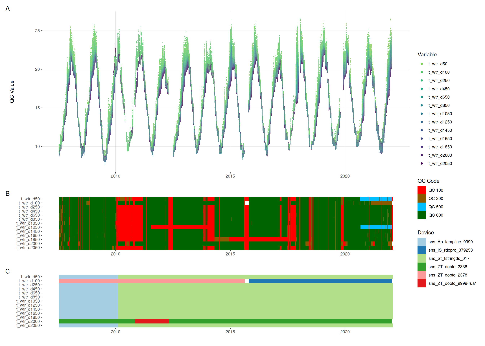
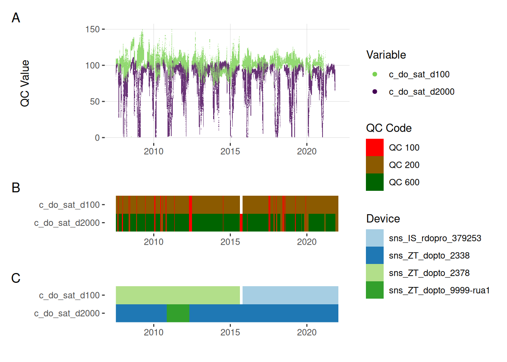
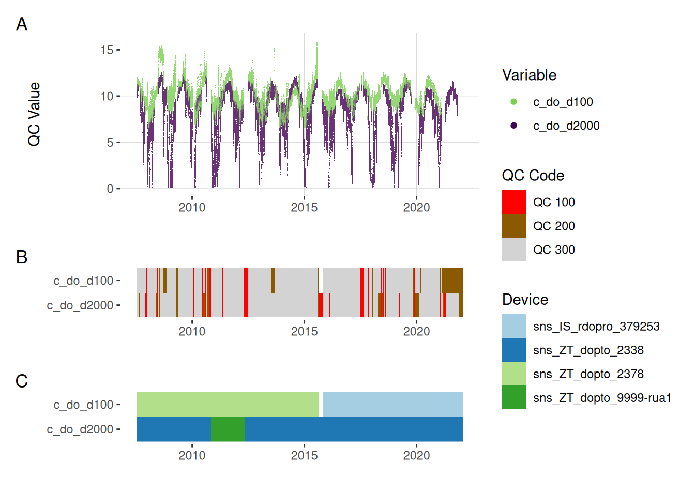
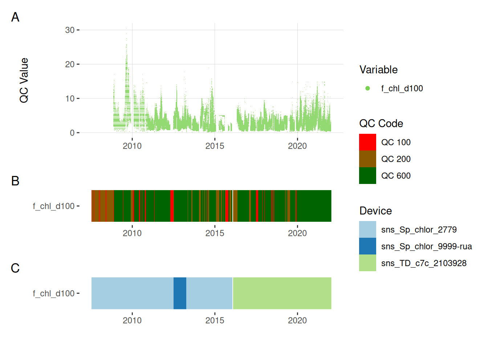
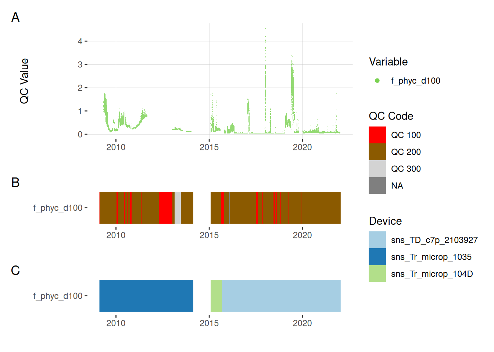
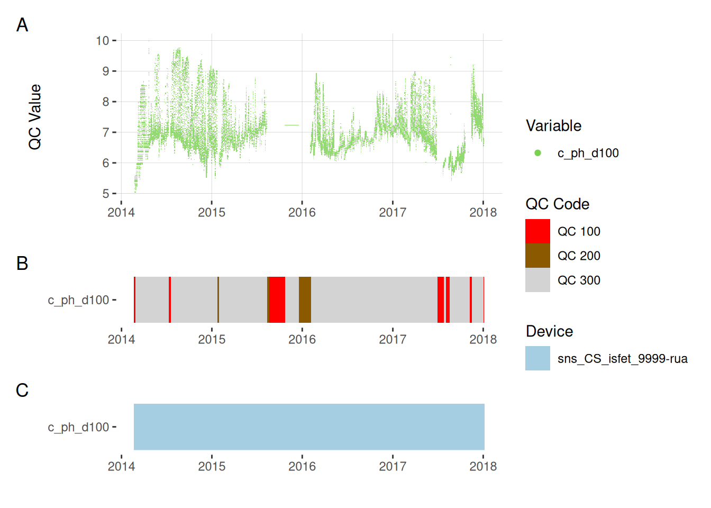

library(dplyr)
library(tidyr)
library(readr)
library(lubridate)
library(ggplot2)
library(scattermore)
library(DT)
library(patchwork)
# Set timezone to NZST
withr::local_locale(c("LC_TIME" = "C"))
withr::local_timezone("Etc/GMT-12")
# Load functions
source("R/qc_funs.R")Rotorua QC Summary
Load libraries
1 Download data from GitHub
piggyback::pb_download(
file = "rotorua_data_qc.zip",
dest = ".",
repo = "limnotrack/f_rotorua",
tag = "v0.0.1"
)
# Unzip the file
unzip("rotorua_data_qc.zip")2 Read data
path <- "rotorua_data_qc"
site <- read_csv("rotorua_data_qc/sites.csv", col_types = cols())
site_events <- read_csv("rotorua_data_qc/site_events.csv", col_types = cols())
site_devices <- read_csv("rotorua_data_qc/site_devices.csv", col_types = cols())
device_var <- read_csv("rotorua_data_qc/device_variable.csv", col_types = cols())
device_position <- read_csv("rotorua_data_qc/device_position.csv",
col_types = cols())
sensor_reference <- read_csv("rotorua_data_qc/sensor_reference.csv",
col_types = cols())
sensor_calibrations <- read_csv("rotorua_data_qc/sensor_calibrations.csv",
col_types = cols())
sensor_scaling <- read_csv("rotorua_data_qc/sensor_scaling.csv",
col_types = cols())
variable_ref <- read_csv("rotorua_data_qc/variables.csv", col_types = cols())
qc_filters <- read_csv("rotorua_data_qc/qc_filters.csv", col_types = cols())data_wide <- read_csv("rotorua_data_qc/rotorua_qc.csv", col_types = cols())Pivot the data to long format and map site devices.
data <- data_wide |>
pivot_longer(
cols = matches("^(qc_value|qc_code|qc_flag)_"),
names_to = c(".value", "var_ref_id"),
names_pattern = "^(qc_value|qc_code|qc_flag)_(.+)$"
)
# Map site devices to data
data <- data |>
map_data_to_devices(site_devices = site_devices,
device_var = device_var,
device_position = device_position,
variables = variable_ref
)
head(data)# A tibble: 6 × 9
site device_id var_abbr var_ref_id label datetime qc_value qc_code
<chr> <chr> <chr> <chr> <chr> <dttm> <dbl> <chr>
1 f_Ro… sns_ZT_d… c_do c_do_d100 Diss… 2007-07-13 14:45:00 11.0 QC 300
2 f_Ro… sns_ZT_d… c_do c_do_d100 Diss… 2007-07-13 15:00:00 11.3 QC 300
3 f_Ro… sns_ZT_d… c_do c_do_d100 Diss… 2007-07-13 15:15:00 11.3 QC 300
4 f_Ro… sns_ZT_d… c_do c_do_d100 Diss… 2007-07-13 15:30:00 11.1 QC 300
5 f_Ro… sns_ZT_d… c_do c_do_d100 Diss… 2007-07-13 15:45:00 11.2 QC 300
6 f_Ro… sns_ZT_d… c_do c_do_d100 Diss… 2007-07-13 16:00:00 11.2 QC 300
# ℹ 1 more variable: qc_flag <chr>3 Summarise by variable
Which variables are in the dataset?
Here is the list of variables in the dataset. The var_ref_id is the variable reference ID, which is used to identify the variable in the dataset. The var_abbr is the variable abbreviation, which is used to identify the variable in the metadata. The label is the variable label, which is used to identify the variable in the metadata. The reference is the reference value for the variable, it can be “d” (depth), “h” (height) or “e” elevation and the value_m is the value in meters.
data |>
select(var_ref_id) |>
distinct() |>
mutate(decode_var_ref(var_ref_id)) |>
left_join(variable_ref, by = c("var_abbr" = "abbr")) |>
select(label, var_abbr, var_ref_id, reference, value_m) |>
datatable(rownames = FALSE,
options = list(
pageLength = 6,
# dom = "t",
columnDefs = list(list(className = 'dt-center', targets = "_all"))
)
) data |>
group_by(label) |>
summarise(
min = min(qc_value, na.rm = TRUE),
max = max(qc_value, na.rm = TRUE),
median = median(qc_value, na.rm = TRUE),
mean = mean(qc_value, na.rm = TRUE),
sd = sd(qc_value, na.rm = TRUE),
n = n(),
na_pct = 100 * sum(is.na(qc_value)) / n(),
qc_pct = 100 * sum(qc_code %in% c("QC 300", "QC 400",
"QC 500", "QC 600")) / n(),
) |>
# Round everything to 1
mutate(across(where(is.numeric), ~ round(.x, 1))) |>
DT::datatable()4 Quality control
We used a set of quality control codes to assess the quality of the data. The codes are from the National Environmental Monitoring Standards (NEMS). The codes are as follows:
5 Visualise each variable
The plots below show the A) time series of the data, B) the quality codes (QC) attributed to each data point, C) the device used to measure the data.
5.1 Temperature
plot_var_ts_qc(data = data, var_ref_id = c("t_wtr_d50", "t_wtr_d100",
"t_wtr_d250", "t_wtr_d450",
"t_wtr_d650", "t_wtr_d850",
"t_wtr_d1050", "t_wtr_d1250",
"t_wtr_d1450", "t_wtr_d1650",
"t_wtr_d1850", "t_wtr_d2000",
"t_wtr_d2050"))

5.2 Oxygen saturation
plot_var_ts_qc(data = data, var_ref_id = c("c_do_sat_d100", "c_do_sat_d2000"))

5.3 Oxygen concentration
plot_var_ts_qc(data = data, var_ref_id = c("c_do_d100", "c_do_d2000"))

5.4 Chlorophyll
plot_var_ts_qc(data = data, var_ref_id = c("f_chl_d100"))

5.5 Phycocyanin
plot_var_ts_qc(data = data, var_ref_id = c("f_phyc_d100"))

5.6 pH
plot_var_ts_qc(data = data, var_ref_id = c("c_ph_d100"))

6 Download data
The data used in this analysis is available for download. The data is in CSV format and is zipped. The data is in the rotorua_data_qc.zip folder. The data can be downloaded either from GitHub or from the button below.